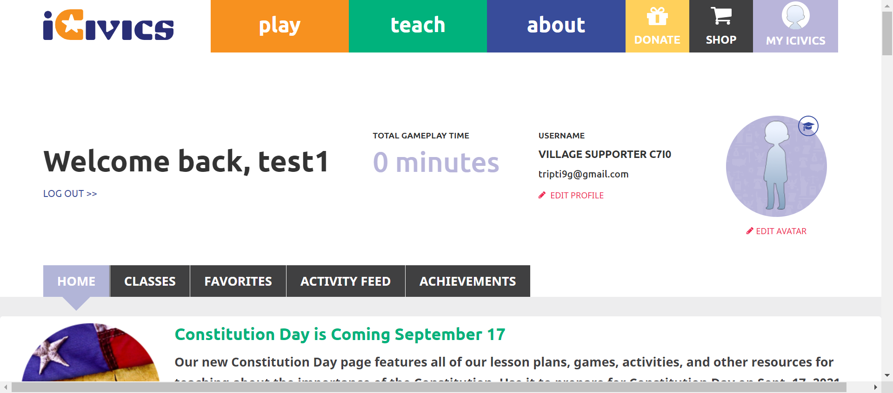
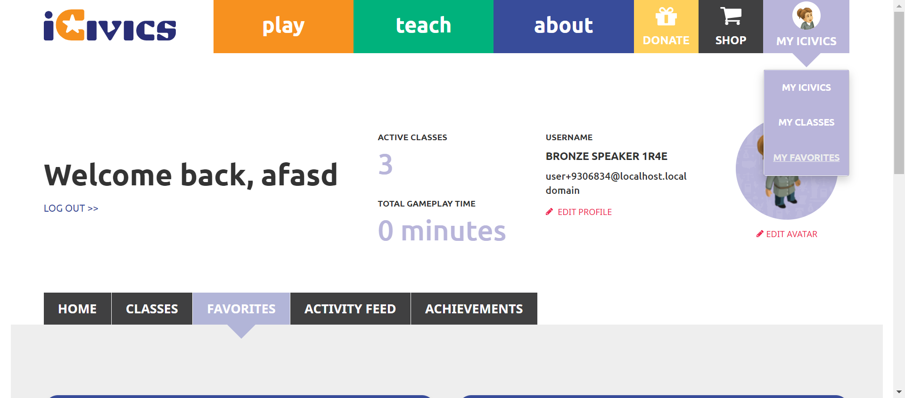

Tests
16 test(s) passed
1 test(s) failed, 0 others
Steps
106 step(s) passed
1 step(s) failed, 0 others
Tests
-
HomepageHeader Jun 29, 2022 01:48:44 PM passJun 29, 2022 01:48:44 PM Jun 29, 2022 01:49:20 PM 0h 0m 36s+0ms
-
C2 - While on the iCivics Home Page, do you see buttons for Donate, Shop, and My iCivics in the navigation bar?
Jun 29, 2022 05:17:09 PM 0h 29m 52s+139ms passStatus Timestamp Details check_circle 1:48:57 PM URL Verified successfully 
check_circle 1:48:58 PM Donatebutton is display 
check_circle 1:48:58 PM Shopbutton is dislay 
check_circle 1:48:59 PM Signin button is display 
check_circle 1:48:59 PM The Element SIGN IN clicked 
check_circle 1:49:02 PM The Element SIGN IN clicked check_circle 1:49:02 PM The Data :Bronze Speaker 1r4e entered Successfully check_circle 1:49:02 PM The Data :i898qrCiPK9Hwgb entered Successfully check_circle 1:49:03 PM The Element LOG IN clicked 
check_circle 1:49:20 PM Myicivicsbutton is display 
-
-
HomepageHeaderAbout Jun 29, 2022 04:39:24 PM passJun 29, 2022 04:39:24 PM Jun 29, 2022 04:40:27 PM 0h 1m 3s+0ms
-
C22 - When you select About, does a submenu open below the About button?
Jun 29, 2022 05:17:09 PM 0h 29m 52s+154ms passStatus Timestamp Details check_circle 4:39:57 PM The Element about clicked 
check_circle 4:39:58 PM Aboutsubmenu display successfully 
check_circle 4:40:23 PM The Element clicked 
check_circle 4:40:27 PM For Homepage aboutbutton is not present 
-
-
HomepageHeaderAbout Jun 29, 2022 04:44:30 PM passJun 29, 2022 04:44:30 PM Jun 29, 2022 04:44:41 PM 0h 0m 11s+0ms
-
C23 - Do you see links to About iCivics, Who We Are, Our Strategy, CIVXNOW, Our Team, Blog, and Contact Us in the submenu?
Jun 29, 2022 05:17:09 PM 0h 29m 52s+161ms passStatus Timestamp Details check_circle 4:44:39 PM The Element about clicked 
check_circle 4:44:39 PM Aboutsubmenu display successfully 
check_circle 4:44:40 PM Aboutbutton submenu count is 7 
check_circle 4:44:40 PM Aboutbutton submenu is ABOUT ICIVICS 
check_circle 4:44:40 PM Aboutbutton submenu is WHO WE ARE 
check_circle 4:44:40 PM Aboutbutton submenu is OUR STRATEGY 
check_circle 4:44:40 PM Aboutbutton submenu is CIVXNOW 
check_circle 4:44:41 PM Aboutbutton submenu is OUR TEAM 
check_circle 4:44:41 PM Aboutbutton submenu is BLOG 
check_circle 4:44:41 PM Aboutbutton submenu is CONTACT US 
-
-
HomepageHeaderAbout Jun 29, 2022 04:46:20 PM passJun 29, 2022 04:46:20 PM Jun 29, 2022 04:46:31 PM 0h 0m 11s+0ms
-
C27 - When you select About again while the submenu is open, does the submenu close?
Jun 29, 2022 05:17:09 PM 0h 29m 52s+171ms passStatus Timestamp Details check_circle 4:46:30 PM The Element about clicked 
check_circle 4:46:30 PM Aboutsubmenu display successfully 
check_circle 4:46:31 PM The Element about clicked 
check_circle 4:46:31 PM About button is clicked again and about menu is close 
-
-
HomepageHeaderAbout Jun 29, 2022 04:47:18 PM passJun 29, 2022 04:47:18 PM Jun 29, 2022 04:50:14 PM 0h 2m 56s+0ms
-
C24 - When you select a link in the submenu, are you navigated to the appropriate page?
Jun 29, 2022 05:17:09 PM 0h 26m 55s+179ms passStatus Timestamp Details check_circle 4:47:53 PM The mouse over by xpath : (//a[@href='/about'])[3] is performed. 
check_circle 4:47:54 PM The element [[ChromeDriver: chrome on WINDOWS (1e19227b4aba1580a0c2d37dc796436e)] -> xpath: (//li[@class='first about icivics']/a)[2]] is visible 
check_circle 4:47:54 PM The expected text contains the actual ABOUT ICIVICS 
check_circle 4:48:19 PM The Element ABOUT ICIVICS clicked 
check_circle 4:48:20 PM The expected https://staging.d9.icivics.org/about url as same as the https://staging.d9.icivics.org/about actual url. 
check_circle 4:48:20 PM The expected text contains the actual iCivics reimagines civic education for American democracy check_circle 4:48:20 PM The mouse over by xpath : (//a[@href='/about'])[3] is performed. 
check_circle 4:48:21 PM The element [[ChromeDriver: chrome on WINDOWS (1e19227b4aba1580a0c2d37dc796436e)] -> xpath: (//li[contains(@class,'who we')]//a)[2]] is visible 
check_circle 4:48:21 PM The expected text contains the actual WHO WE ARE 
check_circle 4:48:50 PM The Element WHO WE ARE clicked 
check_circle 4:48:50 PM The expected https://staging.icivics.org/who-we-are url as same as the https://staging.icivics.org/who-we-are actual url. 
check_circle 4:48:53 PM The mouse over by xpath : (//a[@href='/about'])[3] is performed. 
check_circle 4:48:53 PM The element [[ChromeDriver: chrome on WINDOWS (1e19227b4aba1580a0c2d37dc796436e)] -> xpath: (//li[@class='our strategy']//a)[2]] is visible 
check_circle 4:48:53 PM The expected text contains the actual OUR STRATEGY 
check_circle 4:49:14 PM The Element OUR STRATEGY clicked 
check_circle 4:49:14 PM The expected https://staging.icivics.org/our-strategy url as same as the https://staging.icivics.org/our-strategy actual url. check_circle 4:49:18 PM The mouse over by xpath : (//a[@href='/about'])[3] is performed. 
check_circle 4:49:18 PM The element [[ChromeDriver: chrome on WINDOWS (1e19227b4aba1580a0c2d37dc796436e)] -> xpath: (//li[@class='civxnow']//a)[2]] is visible 
check_circle 4:49:18 PM The expected text contains the actual CIVXNOW 
check_circle 4:49:32 PM The Element CIVXNOW clicked 
check_circle 4:49:32 PM The expected https://civxnow.org/ url as same as the https://civxnow.org/ actual url. 
check_circle 4:49:39 PM The mouse over by xpath : (//a[@href='/about'])[3] is performed. 
check_circle 4:49:39 PM The element [[ChromeDriver: chrome on WINDOWS (1e19227b4aba1580a0c2d37dc796436e)] -> xpath: (//a[@href='/our-team'])[2]] is visible 
check_circle 4:49:39 PM The expected text contains the actual OUR TEAM 
check_circle 4:49:56 PM The Element OUR TEAM clicked check_circle 4:49:57 PM The expected https://staging.icivics.org/our-team url as same as the https://staging.icivics.org/our-team actual url. 
check_circle 4:50:00 PM The mouse over by xpath : (//a[@href='/about'])[3] is performed. 
check_circle 4:50:00 PM The element [[ChromeDriver: chrome on WINDOWS (1e19227b4aba1580a0c2d37dc796436e)] -> xpath: (//li[@class='blog']//a)[2]] is visible 
check_circle 4:50:00 PM The expected text contains the actual BLOG 
check_circle 4:50:04 PM The Element BLOG clicked 
check_circle 4:50:04 PM The expected https://staging.d9.icivics.org/news?keys=&tid%5B1%5D=1 url as same as the https://staging.d9.icivics.org/news?keys=&tid%5B1%5D=1 actual url. 
check_circle 4:50:04 PM The expected text contains the actual iCivics Blog and News 
check_circle 4:50:07 PM The mouse over by xpath : (//a[@href='/about'])[3] is performed. 
check_circle 4:50:07 PM The element [[ChromeDriver: chrome on WINDOWS (1e19227b4aba1580a0c2d37dc796436e)] -> xpath: (//a[@href='/contact'])[2]] is visible 
check_circle 4:50:07 PM The expected text contains the actual CONTACT US 
check_circle 4:50:11 PM The Element CONTACT US clicked 
check_circle 4:50:11 PM The expected https://icivics.zendesk.com/hc/en-us/requests/new url as same as the https://icivics.zendesk.com/hc/en-us/requests/new actual url. 
check_circle 4:50:14 PM All links in the About dropdown is verified sucessfully 
-
-
HomepageHeaderMyIcivicsMisc Jun 29, 2022 05:17:09 PM failJun 29, 2022 05:17:09 PM Jun 29, 2022 05:27:12 PM 0h 10m 3s+400ms
-
C29 - Can you see an appropriate icon for Donate?
Jun 29, 2022 05:17:22 PM 0h 0m 9s+695ms passStatus Timestamp Details check_circle 5:17:22 PM Donatebutton is displayed 
-
C30 - When you select Donate, are you directed to https://give.icivics.org/?
Jun 29, 2022 05:17:46 PM 0h 0m 21s+332ms passStatus Timestamp Details check_circle 5:17:34 PM Donatebutton is clicked 
check_circle 5:17:46 PM 'Donatebutton is clicked'redirect to corresponding pagehttps://give.icivics.org/q7Mcn0NUdUylSaBbpfwl4w2?_ga=2.62872172.1538426651.1656503252-887403431.1656503251 
-
C31 - Can you see an appropriate icon for Shop?
Jun 29, 2022 05:18:19 PM 0h 0m 31s+56ms passStatus Timestamp Details check_circle 5:18:19 PM Shopbutton is displayed 
-
C32 - When you select Shop, are you directed to https://icivics.myshopify.com/?
Jun 29, 2022 05:18:36 PM 0h 0m 14s+102ms passStatus Timestamp Details check_circle 5:18:31 PM Shopbutton is clicked 
check_circle 5:18:36 PM 'Shopbutton is clicked'redirect to corresponding pagehttps://icivics.myshopify.com/ 
-
C34 - If you are signed in, do you see a My iCivics button instead of Sign In?
Jun 29, 2022 05:19:08 PM 0h 0m 30s+131ms passStatus Timestamp Details check_circle 5:19:08 PM Myicivicsbutton is display after login instead of signin button 
-
C35 - Can you see your avatar icon represented in the button?
Jun 29, 2022 05:20:07 PM 0h 0m 57s+411ms passStatus Timestamp Details check_circle 5:20:07 PM Avatar image is displayed on the button 
-
C35 - Can you see your avatar icon represented in the button?
Jun 29, 2022 05:20:44 PM 0h 0m 33s+322ms passStatus Timestamp Details check_circle 5:20:44 PM My iCivics button has sillouette avatar -
C36 - When you select Sign In/My iCivics, does a submenu open below the button?
Jun 29, 2022 05:21:17 PM 0h 0m 30s+631ms passStatus Timestamp Details check_circle 5:21:17 PM myicivics button is clicked and submenu is display 
-
C37 - When you select Sign In, do you see links to Sign In, Register As a Student, Register As A Teacher in the submenu?
Jun 29, 2022 05:21:53 PM 0h 0m 34s+119ms passStatus Timestamp Details check_circle 5:21:52 PM myicivics button is clicked and submenu is display 
check_circle 5:21:52 PM myicivics submenu count is 3 
check_circle 5:21:52 PM myicivcs submenu is MY ICIVICS 
check_circle 5:21:53 PM myicivcs submenu is MY CLASSES 
check_circle 5:21:53 PM myicivcs submenu is MY FAVORITES 
-
C39 -When you select a link in the submenu, are you navigated to the appropriate page?
Jun 29, 2022 05:24:18 PM 0h 2m 22s+447ms passStatus Timestamp Details check_circle 5:22:50 PM The mouse over by xpath : (//a[@title='MY ICIVICS'])[2] is performed. 
check_circle 5:22:50 PM The element [[ChromeDriver: chrome on WINDOWS (20fc7eebd6daf43b13c3ee22f81f1ff7)] -> xpath: (//a[@title='My iCivics'])[2]] is visible 
check_circle 5:22:51 PM The expected text contains the actual MY ICIVICS 
check_circle 5:23:18 PM The Element MY ICIVICS clicked 
check_circle 5:23:19 PM The expected https://staging.d9.icivics.org/user/9306834 url as same as the https://staging.d9.icivics.org/user/9306834 actual url. 
check_circle 5:23:19 PM The expected text contains the actual Welcome back, 
check_circle 5:23:19 PM The mouse over by xpath : (//a[@title='MY ICIVICS'])[2] is performed. 
check_circle 5:23:20 PM The element [[ChromeDriver: chrome on WINDOWS (20fc7eebd6daf43b13c3ee22f81f1ff7)] -> xpath: (//a[@title='My Classes'])[2]] is visible 
check_circle 5:23:20 PM The expected text contains the actual MY CLASSES 
check_circle 5:23:47 PM The Element MY CLASSES clicked 
check_circle 5:23:48 PM The expected https://staging.d9.icivics.org/classes url as same as the https://staging.d9.icivics.org/classes actual url. 
check_circle 5:23:48 PM The expected text contains the actual SYNC CLASSROOM CLASSES check_circle 5:23:48 PM The mouse over by xpath : (//a[@title='MY ICIVICS'])[2] is performed. 
check_circle 5:23:49 PM The element [[ChromeDriver: chrome on WINDOWS (20fc7eebd6daf43b13c3ee22f81f1ff7)] -> xpath: (//a[@title='My Favorites'])[2]] is visible 
check_circle 5:23:49 PM The expected text contains the actual MY FAVORITES 
check_circle 5:24:17 PM The Element MY FAVORITES clicked 
check_circle 5:24:17 PM The expected https://staging.d9.icivics.org/favorites url as same as the https://staging.d9.icivics.org/favorites actual url. 
check_circle 5:24:18 PM The expected text contains the actual Lessons from Antiquity 
-
C41 -If you are viewing one of the pages in the Sign In/My iCivics submenu, is that page underlined in the submenu?
Jun 29, 2022 05:26:35 PM 0h 2m 15s+317ms failStatus Timestamp Details check_circle 5:24:55 PM myicivics button is clicked and submenu is display 
check_circle 5:25:26 PM Selected page is underlined 
cancel 5:26:00 PM Selected page is not underlined 
check_circle 5:26:35 PM Selected page is underlined check_circle 5:26:35 PM The Element MY ICIVICS clicked 
check_circle 5:26:35 PM Myicivics submenu is close on clicking again 
-
C42 - When you select Sign In / My iCivics again while the submenu is open, does the submenu close?
Jun 29, 2022 05:27:12 PM 0h 0m 34s+646ms passStatus Timestamp Details check_circle 5:27:12 PM The Element MY ICIVICS clicked 
check_circle 5:27:12 PM Myicivics submenu is close on clicking again 
-
info_outline
check_circle
cancel
cancel
error
warning
redo
clear
Dashboard
Tests
17
Steps
107
Start
Jun 29, 2022 05:17:08 PM
End
Jun 29, 2022 05:27:13 PM
Time Taken
0h 10m 4s+694ms